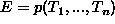
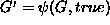
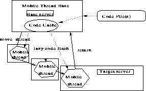
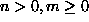
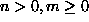
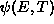
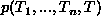
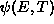
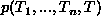

Paul Tarau1 and Veronica Dahl2
Université de Moncton
Département d'Informatique
Moncton, N.B. Canada E1A 3E9,
tarau@info.umoncton.ca
Logic and Functional Programming Group
Department of Computing Sciences
Simon Fraser University
Burnaby, B.C. Canada V5A 1S6
veronica@cs.sfu.ca
Mobile threads are implemented by capturing
first order continuations
in a compact data structure sent over the network.
Code is fetched lazily from its original base turned into a server
as the continuation executes at the remote site.
Our techniques, in combination with a dynamic recompilation scheme
ensuring that heavily used code moves up smoothly on a speed
hierarchy, are shown to be
an effective means for implementing mobile agents.
Keywords:
mobile computations, remote execution, metaprogramming,
first order continuations, Linda coordination,
blackboard-based logic programming,
mobile code, mobile agents
Data mobility has been present since the beginning of networked computing, and is now used in numerous applications - from remote consultation of a database, to Web browsing.
Code mobility followed, often in disguised form, with human hand waiving being part of the workflow, as is still the case with ftp-transferred, untarred-uncompressed and makefile-hacked Unix installs. More transparently, executables coming over network file systems on intranets as well as self-installing Windows programs are all instances of mobile code. Self-updating software is probably the maximum of functionality which can be expressed in this framework. The most well-known example of code mobility is Java's ability to execute applets directly in client browsers in a fairly secure way through dynamic class fetching and bytecode verification.
Migrating the state of the computation from one machine or process to another still requires a separate set of tools. Java's remote method invocations (RMI) add control mobility and a (partially) automated form of object mobility i.e. integrated code (class) and data (state) mobility.
The Oz 2.0 distributed programming proposal of [25] makes object mobility more transparent, although the mobile entity is still the state of the objects, not ``live'' code.
Mobility of ``live code'' is called computation mobility [3]. It requires interrupting execution, moving the state of a runtime system (stacks, for instance) from one site to another and then resuming execution. Clearly, for some languages, this can be hard or completely impossible to achieve.
Telescript and General Magic's new Odyssey [9] agent programming framework, IBM's Java based aglets as well as Luca Cardelli's Oblique [1] have pioneered implementation technologies achieving computation mobility.
Towards the same objective, this paper will show that we can achieve
full computation mobility through our
mobile threads.
They are implemented by a surprisingly small, source level
modification of the BinProlog system, taking advantage of
the availability of `first order'
continuations as well as
of BinProlog's high level networking primitives.
Mobile threads complete our Logic Programming based Internet
programming infrastructure built in view of
creating Prolog components which can interoperate
with mainstream languages and programming environments.
Mobile threads can be seen as a refinement of mobile
computations as corresponding to mobile partial computations
of any granularity. Mobile agents can be seen as a collection
of synchronized mobile threads sharing common
state [16].
as well as
of BinProlog's high level networking primitives.
Mobile threads complete our Logic Programming based Internet
programming infrastructure built in view of
creating Prolog components which can interoperate
with mainstream languages and programming environments.
Mobile threads can be seen as a refinement of mobile
computations as corresponding to mobile partial computations
of any granularity. Mobile agents can be seen as a collection
of synchronized mobile threads sharing common
state [16].
The paper is organized as follows:
Our Internet programming infrastructure and in particular the technologies we have designed and implemented for code and control mobility are new in the logic programming domain. The main ``paradigm independent'' novelties of our contribution are:
We refer to [17] for the details of our high-level client-server programming primitives and security issues and to [14] for the platform independent and Java-compatible socket-level primitives of BinProlog.
Our networking constructs are built on the top of the popular Linda [4] coordination framework, enhanced with unification based pattern matching, remote execution and a set of simple client-server components melted together into a scalable peer-to-peer layer, forming a `web of interconnected worlds':
out(X): puts X on the server in(X): waits until it can take an object matching X from the server all(X,Xs): reads the list Xs matching X currently on the server remote_run(Goal): starts a thread executing Goal on server stop_server: stops the server
The presence of the all/2 collector compensates for the lack of non-deterministic operations. Note that the only blocking operation is in/1. Blocking rd/1 is easily emulated in terms of in/1 and out/1, while non-blocking rd/1 is emulated with all/2.
A servant is one of the simplest possible agents, which pulls commands from a server and runs them locally:
servant:- in(todo(Task)), call(Task), servant.
Note that servant is started as a background thread. No `busy wait' is involved, as the servant's thread blocks until in(todo(Task)) succeeds. More generally, distributed event processing is implemented by creating a `watching' agent attached to a thread for each pattern.
As servants pulling commands are operationally indistinguishable from servers acting upon clients' requests, they can be used as emulators for servers. A class of obvious applications of this ability is their use as pseudo-servers running on machines with dynamically allocated IP addresses (as offered by most ISP today), laying behind firewalls. This mechanism also works when, because of security restrictions, server components cannot be reached from outside, as in the case of Java applets which cannot listen on ports of the client side machine.
To avoid Java security restrictions, an applet emulates a BinProlog servant, using an interface module written in Java called a Linda Interactor. BinProlog communicates with this special purpose trimmed down pure Prolog engine which supports the same unification based Linda protocol as BinProlog and acts as a gateway between knowledge processing components written in Prolog and visual and reactive components written in Java. In particular, this design allows Java applets to cooperate with the rest of our `peer-to-peer' network of BinProlog interactors, as the Java servant simply pulls out commands from a proxy server on the site where the applet originates from.
Servants as well as other clients can connect to BinProlog servers. Higher order call/N [12], combined with intuitionistic assumptions ``=>>'', are used to pass arbitrary interactors to generic server code:
run_server(Port):-
new_server(Port,Server),
register_server(Port),
server(Server)=>>server_loop,
close_socket(Server).
server_loop:-
repeat,
interact,
assumed(server_done),
!.
interact:-
assumed(Interactor),
assumed(Server),
% higher-order call to interactor
call(Interactor,Server).
Note the use of a specialized server-side interpreter server_loop, configurable through the use of higher-order `question/answer' closures we have called interactors.
The components of a `generic' default server can be overridden through the use of intuitionistic implication to obtain customized special purpose servers. The use of intuitionistic implications (pioneered by Miller's work [11]) helps to overcome (to some extent) Prolog's lack of object oriented programming facilities, by allowing us to `inject' the right interactor into the generic (and therefore reusable) interpreter. BinProlog's ``=>>'' temporarily assumes a clause in asserta order, i.e. at the beginning of the predicate. The assumption is scoped to be only usable to prove its right side goal and vanishes on backtracking. We refer to [14, 20, 6] for more information on assumptions and their applications.
The MOO inspired `web of worlds' metaphor [21, 23]
implemented as
as a set of BinProlog and Java based
Linda blackboards storing state information
on servers connected over the the Internet, allows a simple and secure
remote execution mechanism through specialized server-side interpreters.
inspired `web of worlds' metaphor [21, 23]
implemented as
as a set of BinProlog and Java based
Linda blackboards storing state information
on servers connected over the the Internet, allows a simple and secure
remote execution mechanism through specialized server-side interpreters.
A virtual place (world) is implemented as a server listening on a port which can spawn clients in the same or separate threads interacting with other servers through a simple question/answer protocol.
A master server on a `well-known' host/port is used to exchange identification information among peers composed of clients and a server (Fig. 2), usually running as threads of the same process.
Implementation of arbitrary remote execution is easy in a Linda + Prolog system, due to Prolog's metaprogramming abilities. No complex serialization/remote object packages are needed. Our primitive remote call operation is:
host(Other_machine)=>>remote_run(Answer,RemoteGoal).
It implements deterministic remote predicate calls with (first)-answer or `no' returned to the calling site.
For instance, to iterate over the set of servers forming the receiving end of our `Web of Worlds', after retrieving the list from a `master server' which constantly monitors them making sure that the list reflects login/logout information, we simply override host/1 and port/1 with intuitionistic implication:
ask_all_servers(Channel,ListOfServers,Question):-
member(server_id(Channel,H,P),ListOfServers),
host(H)=>>port(P)=>>
ask_a_server(Question,_),
fail;true.
Note that a Channel pattern is used to select a subset of relevant servers, and in particular, when Channel is a ``match all'' free logical variable, all of them.
We will shortly discuss here the basic Mobile Code facilities we have implemented.
In BinProlog, code fetched lazily, one predicate at a time, as needed by the execution flows over the network.
Code is cached in a local database and then dynamically recompiled on the fly if usage statistics indicate that it is not volatile and it is heavily used locally.
The following operations
host(Other_machine)=>>rload(File). host(Other_machine)=>>code(File)=>>TopGoal.
allow fetching remote files rload/1 or on-demand fetching of a predicate at a time from a remote host during execution of TopGoal. This is basically the same mechanism as the one implemented for Java applet code fetching, except that we have also implemented a caching mechanism, at predicate level (predicates are cached as dynamic code on the server to efficiently serve multiple clients).
Dynamic recompilation is used on the client side to speed-up heavily used, relatively non-volatile predicates. With dynamically recompiled consulted code, listing of sources and dynamic modification to any predicate is available, while average performance stays close to statically compiled code (usually within a factor of 2-3). Although when code comes over the network, code fetching time becomes more significant, the combination of lazy remote code fetching and dynamic recompilation is a powerful accelerator for distributed network applications.
Our implementation of dynamic recompilation for BinProlog is largely motivated by the difficulty/complexity of relying on the programmer to specify execution methods for remote code.
The intuition behind the dynamic recompilation algorithm of BinProlog is
that update vs. call based statistics are associated
to each predicate declared or detected as dynamic.
Dynamic (re)compilation is triggered for relatively non-volatile predicates,
which are promoted on the `speed-hierarchy' to a faster
implementation method (interpreted
We can describe BinProlog's dynamic `recompilation
triggering statistics' through a simple `thermostat' metaphor.
Updates (assert/retract) to a predicate have the effect of increasing its
associated `temperature', while Calls
will decrease it. Non-volatile (`cool') predicates
are dynamically recompiled, while recompilation is avoided for volatile (`hot') predicates.
A ratio based on cooling factors (number of calls,
compiled/interpreted execution speed-up etc.) and
heating factors (recompilation time, number of updates etc.)
smoothly adjusts for optimal overall performance,
usually within a factor of 2 from static code.
BinProlog allows launching
multiple Prolog engines having their own stack groups (heap, local stack
and trail). An engine can be seen as an abstract data-type which
produces a (possibly infinite) stream of solutions as needed.
To create an new engine, we use:
or, by using default parameters for the stacks:
The Handle is a unique integer denoting the engine for further
processing.
To `fuel' the engine with a goal and an expected answer variable
we use:
No processing, except the initialization of the
engine takes place, and no answer
is returned with this operation.
To get an answer from the engine we use:
Each engine has its own heap garbage collection process
and backtracks independently using its choice-point stack and trail
during the computation of an answer.
Once computed, an answer is copied from an engine to its ``master''.
When the stream of answers reaches its end,
If for some reason we are not interested in the engine any more,
we can free the space allocated to the engine and completely discard it with:
The following example (see more in files
library/engines, progs/engtest.pl in the BinProlog distribution [14])
shows a sequence of the previously described operations:
Multiple `orthogonal engines' as shown in Figure 3
enhance the expressiveness of
Prolog by allowing an AND-branch of an engine to
collect answers from multiple OR-branch of another engine.
They give to the programmer the means to see
as an abstract sequence and control, the answers
produced by an engine, in a way
similar to Java's Enumeration interface.
Engines can be assigned to their own thread by using
BinProlog's POSIX thread package.
A unique primitive is needed,
which launches a new thread R to perform the computation of
an answer of engine E.
On top of this facility each thread can implement a separate server,
client or become the base of a mobile agent.
We will shortly explain here BinProlog's continuation passing
preprocessing technique, which results in availability of
continuations as data structures accessible to the programmer.
Binary clauses have only one atom in the body
(except for some in-line `builtin' operations like arithmetics),
and therefore they need no `return' after a call.
A transformation introduced in [15] allows to
faithfully represent logic programs with operationally equivalent
binary programs.
To keep things simple, we will describe our transformations in the case
of definite programs.
We will follow here the notations of [22].
Let us define the composition operator
that combines clauses by unfolding the leftmost body-goal
of the first argument.
Let A
with = mgu(A
This Prolog-like inference rule is called LD-resolution and it has
the advantage of giving a more accurate description of Prolog's operational semantics than SLD-resolution.
Before introducing the binarization transformation, we describe two
auxiliary transformations.
The first transformation converts facts into rules by giving
them the atom true as body. E.g., the fact p is
transformed into the rule p :- true.
The second transformation, inspired by [27],
eliminates the metavariables by wrapping them in a call/1 goal.
E.g., the rule and(X,Y):-X, Y is transformed into
and(X,Y) :- call(X), call(Y).
The transformation of [15]
(binarization) adds continuations
as extra arguments of atoms in a way that preserves
also first argument indexing.
Let P be a definite program and Cont a new
variable. Let T and  be two
expressions.
we construct the clause
The set of all clauses
The following example shows the result of this
transformation on the well-known `naive reverse' program:
These transformations preserve a
strong operational equivalence with the
original program with respect to the LD resolution rule, which
is reified in the syntactical structure of the
resulting program, i.e. each resolution step
of an LD derivation on a definite program P
can be mapped to an SLD-resolution step of the binarized program ,
in the sense that if G is an atomic goal and  ,
then computed answers obtained
querying P with G are the same as those obtained by querying P' with G'.
Clearly, continuations become explicit in the binary version of the program.
We have devised a technique to access and manipulate them in an intuitive
way, by modifying BinProlog's binarization preprocessor.
Basically, the clauses constructed with ::- instead of :-
are considered as being already in binary form, and not subject
therefore to further binarization. By explicitly accessing
their arguments, a programmer is able to access and modify the
current continuation as a `first order object'.
Note however that code referring to the continuation
is also part of it, so that some care should be taken in
manipulating the circular term representing the continuation
from `inside'.
As continuations (describing future computations
to be performed at a given point)
are first order objects in BinProlog,
it is easy to extract from them a conjunction of goals
representing
future computations intended to be performed at
another site,
send it over the network and resume working on it
at that site.
The natural unit of mobility is a thread
moving to a server executing multiple
local and remotely originated threads.
Threads communicate with their local and remote
counterparts, listening on ports
through the Linda protocol, as described in [7].
Before moving to another site the current continuation
needs to be captured in a data structure (see Appendix I).
For flexibility, a wrapper capture_cont_for/1
is used first to
restrict the scope of the continuation to
a (deterministic) toplevel Goal. This avoids taking
irrelevant parts of the continuation (like prompting the user
for the next query) to the remote site inadvertently.
A unique logical variable is used through a linear
assumption cont_marker(End) to mark the end
of the scope of the continuation with end_cont(End).
From inside the continuation, call_with_cont/1 is used to
extract the relevant segment of the continuation. Towards
this end, consume_cont(Closure,Marker) extracts a conjunction of
goals from the current continuation until Marker is reached, and then it
applies Closure to this conjunction (calls it with the
conjunction passed to Closure as an argument).
Extracting the continuation itself
is easy, by using BinProlog's ability to
accept user defined binarized clauses
(introduced with ::- instead of :-),
accessing the continuation as a `first order' object:
Our continuation moving protocol can be described easily in terms
of synchronized source side
Communication between the base and the target side
is done with remote predicate calls
protected with dynamically generated passwords
shared between the two sides before the migratory
components ``takes off''.
Initially the target side waits in server mode. Once the continuation
is received on the target side, the source side switches in server mode
ready to execute code fetching and persistent database
update requests from its mobile counterpart on the target side.

Fig. 4 shows the connections between a mobile thread
and its base.
Note that our continuation moving protocol
expresses computation mobility in terms of
``client-server role alternation'', i.e. by specifying
which end plays which of the roles at a given time.
In principle, with some added complexity, our target-side
remote_call operation can be replaced with
equivalent servant-based target side code
(see subsection 2.1) if
security restrictions
or unreachability of the target through firewalls
gets in the way.
As our networking infrastructure, our mobile threads are
platform independent. As Java, BinProlog is a platform
independent emulator based language.
As a consequence, a thread can start on a Unix machine and
move transparently to a Windows NT system and back.
Binaries for
various Unix and Windows platforms are freely available at http://clement.info.umoncton.ca/BinProlog. For faster, platform specific
execution, BinProlog provides compilation to C of static code using
an original partial translation technique described in [24].
Networking code expressed in terms of mobile threads tends
to be very compact. The following (self-explanatory) example
illustrates both lazy code fetching and thread movement.
Note that when the base turns into a server, it offers its
own code for remote use by the moved thread - a kind of
virtual ``on demand'' process cloning operation, one step
at a time. As the server actually acts as a code cache,
multiple moving threads can benefit from this operation.
Note also that only predicates needed for the migratory
segment of the continuation are fetched. This ensures
that migratory code is kept lightweight for most mobile
applications.
Advanced mobile object and mobile agents agent systems
when built on top of Java's impressive dynamic class loading and
its new reflection and remote method invocation classes
like IBM Japan's Aglets or General Magic's Odyssey
provide comprehensive mobility of code and data.
Moreover, data is encapsulated as state of objects.
This property allows protecting sensitive components of it
more easily. Distributed Oz 2 provides fully transparent
movement of objects over the network, giving the illusion
that the same program runs on all the computers.
So why do we need the apparently more powerful
concept of mobile ``live code'' i.e. mobile execution state?
Our answer to this question is that live mobile code is needed because
is still semantically simpler than
mobile object schemes. Basically, all that a programmer
needs to know is that his or her program has moved to
a new site and it is executing there. A unique (in our case
move_thread) primitive, with an
intuitive semantics, needs to be learned.
When judging about how appropriate a language feature is,
we think that the way it looks to the end user is among the
most important ones. For this reason, mobile threads are
competitive with sophisticated object mobility constructs
on ``end-user ergonomy'' grounds,
while being fairly simple to implement, as we have shown,
in languages in which continuations can be easily
represented as data structures.
As shown in [18],
part of the functionality of mobile computations can be emulated
in terms of remote predicate calls combined with remote
code fetching.
An implicit virtual place (host+port) can be set as the target
of the remote calls.
Then, it is enough to send the top-level goal
to the remote side and have it fetch the code as needed from
a server at the site from where the code originates.
Note however that this is less efficient in terms of network
transactions and less reliable than
sending the full continuation at once as with
our mobile threads.
Overall, our belief is that availability of
computation mobility can help both with
simplifying programming
and with making distributed applications
more efficient and fault tolerant.
Mobile agents can be seen as a collection
of synchronized mobile threads sharing common
state [16].
We have first implemented them by using an emulation of
computation mobility in terms of control mobility
as described in subsection 7.2.
Mobile agents are implemented by iterating thread mobility over
a set of servers
Among the applications of mobile agents
easy to express in our framework:
A very large number of research projects
have recently started on mobile computations/mobile agent programming.
Among the pioneers, Kahn and Cerf's Knowbots [10]
Among the most promising recent developments,
Luca Cardelli's Oblique project at Digital and
mobile agent applications [1]
and IBM Japan's aglets [8].
We share their emphasis on going beyond code mobility
and control mobility as present in Java and
its RMI, for instance,
towards computation mobility.
Mobile code technologies are pioneered by General Magic's
Telescript (see [9] for their last Java based
mobile agent product).
Another mobility framework, sharing some of our objectives
towards transparent high level distributed programming
is built on top of Distributed Oz [25, 26],
a multi-paradigm language, also including a logic programming
component.
Although thread mobility is not implemented in Distributed Oz 2,
some of this functionality can be emulated in terms of
network transparent mobile objects.
Achieving the illusion of a unique application transparently
running on multiple sites makes implementing shared
multi-user applications particularly easy.
We can achieve similar results by implementing mobile agents (e.g.
avatars) as mobile threads with parts of the shared world visible
to an agent represented as dynamic facts, lazily replicated through our
lazy code fetching scheme when the agent moves.
Both Distributed Oz 2 and our BinProlog based infrastructure
need a full language processor
(Oz 2 or BinProlog) to be deployed at each node.
However, assuming that a Java processor is already installed,
our framework's Java client (see [18, 17, 19])
allows this functionality to be available through
applets attached to a server side BinProlog thread.
A calculus of mobility dealing with containers,
called ambients, is described in [2].
The calculus covers at very high level of generality movement
and permissions to move from one ambient to another and
show how fundamental computational mechanisms like Turing machines
as well as process calculi can be expressed within the the formalism.
Our coordination logic of
[16]
describes surprisingly similar ideas,
based on programming mobile avatars
in shared virtual worlds.
Two classes of containers, clonable and unique
regulate creation of new instances (clones) and
non-copiable (unique) entities (like electronic money),
as well as their movement.
We have described how mobile threads are implemented by capturing
first order continuations in a data structure sent over the network.
Supported by lazy code fetching and
dynamic recompilation,
they have been shown to be
an effective framework for
implementing mobile agents.
The techniques presented here are not (Bin)Prolog specific.
The most obvious porting target of our design is to functional
languages featuring first order continuations and threads.
Another porting target is Java and similar OO languages
having threads, reflection classes and
remote method invocation.
Future work will focus on intelligent mobile agents integrating
knowledge and controlled natural language processing abilities,
following our previous work described in [5, 13, 21].
We thank for support from NSERC (grants OGP0107411 and 611024), and from the
FESR of the Université de Moncton.
http://gatekeeper.dec.com/pub/DEC/SRC/research-reports/abstracts/src-rr-138.html.
http://www.research.digital.com/SRC/personal/Luca_Cardelli/Papers.html.
Engines and Answer Threads
Engines
% :-mode create_engine(+,+,+,-).
create_engine(HeapSize,StackSize,TrailSize,Handle)
% :-mode create_engine(-).
create_engine(Handle)
% :-mode load_engine(+,+,+).
load_engine(Handle,Goal,AnswerVariable)
% :-mode ask_engine(+,-).
ask_engine(Handle,Answer)
% :-mode destroy_engine(+).
destroy_engine(Handle)
?-create_engine(E),
load_engine(E,append(As,Bs,[A,B,B,A]),As+Bs),
ask_engine(E,R1),write(R1),nl,
ask_engine(E,R2),write(R2),nl,
destroy_engine(E).
Threads
ask_thread(E,R)
First order Continuations through Binarization
The binarization transformation
 :-A
:-A  ,A
,A  ,...,A and
B :-B
,...,A and
B :-B  ,...,B be two clauses (suppose  ). We define
(A
,...,B be two clauses (suppose  ). We define
(A  :-A
:-A  ,A
,A  ,...,A
,...,A  )
)  (B
(B  :-B
:-B  ,...,B ) = (A
,...,B ) = (A  :-B ,...,B
:-B ,...,B  ,A
,A  ,...,A )
,...,A )
 ,B
,B  ). If the atoms A and
B
). If the atoms A and
B  do not unify, the result of the composition is denoted as
do not unify, the result of the composition is denoted as  .
Furthermore, as usual, we consider A
.
Furthermore, as usual, we consider A  :-true,A ,...,A
:-true,A ,...,A  to be equivalent to A :-A ,...,A
to be equivalent to A :-A ,...,A  , and for any clause C,
, and for any clause C,  C = C =
C = C =  .
We assume that at least one operand has been renamed to a variant with
variables standardized apart.
.
We assume that at least one operand has been renamed to a variant with
variables standardized apart.
 We denote by
 the expression  .
Starting with the clause
We denote by
 the expression  .
Starting with the clause
app([],Ys,Ys,Cont):-true(Cont).
app([A|Xs],Ys,[A|Zs],Cont):-app(Xs,Ys,Zs,Cont).
nrev([],[],Cont):-true(Cont).
nrev([X|Xs],Zs,Cont):-nrev(Xs,Ys,app(Ys,[X],Zs,Cont)).
Mobile threads: Take the Future and Run
Capturing continuations
get_cont(Cont,Cont)::-true(Cont).
The Continuation Moving Protocol
 ,
and target side operations.
,
and target side operations.
Source side operations

Target side operations
are scheduled as a sequence of goals
extracted from the current continuation at the source side , and received
over the network together with a small set of synchronization commands:
4: Launching a mobile thread from its base
An Example
% assumes a server has been started on the same machine with:
%
% ?-port(9300)=>run_unrestricted_server.
%
% Program to be fetched over the network
% and run on target server
%
a(1).
a(2).
b(X):-a(X).
work_there:-b(X),write('X'=X),nl,fail.
% main code sending a moving thread to server
go:-
% port where the target server runs
port(9300)=>
wrap_thread(( % wraps up code subject to movement
write(here),nl, % action on `base'
move_thread, % actual thread movement
work_there % action on target
)),
% code to be executed when `back'
write(back),nl.
% end of program
% Interaction on TARGET
?-port(9300)=>run_unrestricted_server.
.....
X = 1
X = 2
% Interaction on BASE
?-go.
here
running_server(port(9390),password(pw_5473)) % sets up base server
consulting(../progs/tmob.pl) % sets up code cache
consulted(../progs/tmob.pl) % by consulting into a local database
time(consulting = 30,quick_compiling = 0,static_space = 0)
server_done(port(9390),password(pw_5473)) % password protected stop
back % message back home
yes
Mobile threads - are they needed?
The ``pros'' for computation mobility:
simplicity and learnability
Emulating computation mobility through control mobility
Mobile Agents
 known to a given master server.
An efficient pyramidal deployment strategy can be used
to efficiently implement, for instance,
push technology through mobile
agents. Inter-agent communication can be achieved either by rendez-vous
of two mobile threads at a given site, by communicating through
a local Prolog database, or through the base server known to
all the deployed agents.
Communication with the base server
is easily achieved through remote predicate calls with
remote_run.
Basic security of mobile agents is achieved with
randomly generated passwords,
required for remote_run operations, and
by running them on a restricted BinProlog machine,
without user-level file write and
external process spawn operations.
known to a given master server.
An efficient pyramidal deployment strategy can be used
to efficiently implement, for instance,
push technology through mobile
agents. Inter-agent communication can be achieved either by rendez-vous
of two mobile threads at a given site, by communicating through
a local Prolog database, or through the base server known to
all the deployed agents.
Communication with the base server
is easily achieved through remote predicate calls with
remote_run.
Basic security of mobile agents is achieved with
randomly generated passwords,
required for remote_run operations, and
by running them on a restricted BinProlog machine,
without user-level file write and
external process spawn operations.
Related work
Conclusion
Acknowledgment
Appendix I: Capturing First Order Continuations in BinProlog
% calls Goal with current continuation available to its inner calls
capture_cont_for(Goal):-
assumeal(cont_marker(End)),
Goal,
end_cont(End).
% passes Closure to be called on accumulated continuation
call_with_cont(Closure):-
assumed(cont_marker(End)),
consume_cont(Closure,End).
% gathers in conjunction goals from the current continuation
% until Marker is reached when it calls Closure on it
consume_cont(Closure,Marker):-
get_cont(Cont),
consume_cont1(Marker,(_,_,_,Cs),Cont,NewCont), % first _
call(Closure,Cs), % second _
% sets current continuation to leftover NewCont
call_cont(NewCont). % third _
% gathers goals in Gs until Marker is hit in continuation Cont
% when leftover LastCont continuation (stripped of Gs) is returned
consume_cont1(Marker,Gs,Cont,LastCont):-
strip_cont(Cont,Goal,NextCont),
( NextCont==true-> !,errmes(in_consume_cont,expected_marker(Marker))
; arg(1,NextCont,X),Marker==X->
Gs=Goal,arg(2,NextCont,LastCont)
; Gs=(Goal,OtherGs),
consume_cont1(Marker,OtherGs,NextCont,LastCont)
).
% this `binarized clause' gets the current continuation
get_cont(Cont,Cont)::-true(Cont).
% sets calls NewCont as continuation to be called next
call_cont(NewCont,_) ::- true(NewCont).
Appendix II: Thread Mobility in BinProlog
% wraps continuation of current thread to be taken
% by inner move_thread goal to be executed remotely
wrap_thread(Goal):-
capture_cont_for(Goal).
% picks up wrapped continuation,
% jumps to default remote site and runs it there
move_thread:-
call_with_cont(move_with_cont).
% moves to remote site goals Gs in current continuation
move_with_cont(Gs):-
% gets info about this host
detect_host(BackHost),
get_free_port(BackPort),
default_password(BackPasswd),
default_code(BackCode),
% runs delayed remote command (assumes is with +/1)
remote_run(
+todo(
host(BackHost)=>>port(BackPort)=>>code(BackCode)=>>(
sleep(5), % waits until server on BackPort is up
% runs foals Gs picked up from current continuation
(Gs->true;true), % ignores failure
% stops server back on site of origin
stop_server(BackPasswd)
)
)
),
% becomes data and code server for mobile code until is
% stopped by mobile code possessing password
server_port(BackPort)=>>run_unrestricted_server.
Paul Tarau
Tue Sep 2 21:37:18 ADT 1997